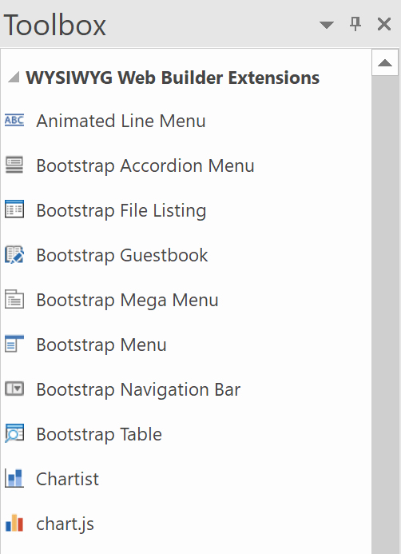
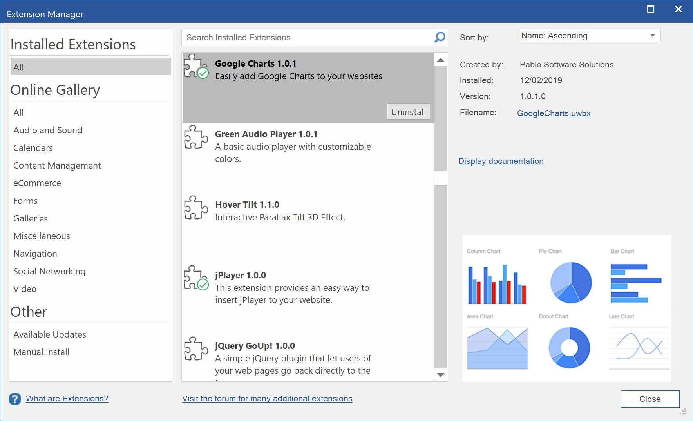

Extension Manager
Extensions (also called add-ons or plugins) are components which enhance the functionality of WYSIWYG Web Builder. Extensions can be accessed through the Toolbox or via the Insert menu just like the standard objects.
Extensions (also called add-ons or plugins) are components which enhance the functionality of WYSIWYG Web Builder. Extensions can be accessed through the Toolbox or via the Insert menu just like the standard objects.
Online Gallery
The Online Gallery page displays all extensions available for download and installation. If a new version of an extension that you already have is available online, then you have the choice to update it. Each time you open this window, Web Builder will ask if you wish to download the most recent list from the website. Normally you will have to do this only once a week.
Available Updates
This section will display a list of the available updates for the extensions you have installed.
The Online Gallery page displays all extensions available for download and installation. If a new version of an extension that you already have is available online, then you have the choice to update it. Each time you open this window, Web Builder will ask if you wish to download the most recent list from the website. Normally you will have to do this only once a week.
Available Updates
This section will display a list of the available updates for the extensions you have installed.
Manual Install
The Manual Install page allows you to manually install extensions.
Click the 'Install' button to select an extension file (*.wbx) or zip file.
You can also drag & drop one or more extensions from Windows Explorer on this window!
You can also manually install extensions by copying the .wbx or .uwbx file to the extensions folder:
C:\Users\Your Name\Documents\WYSIWYG Web Builder\system\extensions
where 'Your Name' is the name of your personal folder on the computer.
Note: the actual location of the extensions folder is controlled by the 'system folder' configuration in Tools -> Options -> Files & Folders
The Manual Install page allows you to manually install extensions.
Click the 'Install' button to select an extension file (*.wbx) or zip file.
You can also drag & drop one or more extensions from Windows Explorer on this window!
You can also manually install extensions by copying the .wbx or .uwbx file to the extensions folder:
C:\Users\Your Name\Documents\WYSIWYG Web Builder\system\extensions
where 'Your Name' is the name of your personal folder on the computer.
Note: the actual location of the extensions folder is controlled by the 'system folder' configuration in Tools -> Options -> Files & Folders
Disclaimer:
Extensions are made available as an extra service for registered users. Extensions do not work in the trial version because they are not an official part of the software!
There is no official support on (free) extensions. ll extensions are provided "AS IS" for users who find them useful. But of course we will do our best to make sure they work properly. We would not have shared them if they did not work. So, please read the documentation if something does not work.
Extensions are made available as an extra service for registered users. Extensions do not work in the trial version because they are not an official part of the software!
There is no official support on (free) extensions. ll extensions are provided "AS IS" for users who find them useful. But of course we will do our best to make sure they work properly. We would not have shared them if they did not work. So, please read the documentation if something does not work.
There is already a long list of official extensions and in the we continue release new of extensions to make WYSIWYG Web Builder even more powerful than it already is. Some extensions are simply components with few parameters while other are almost complete applications by themselves!
See also: https://www.wysiwygwebbuilder.com/extensions.html
You can also create your own extensions with the Extension Builder tool:
https://www.wysiwygwebbuilder.com/extension_builder.html
Other users have made some incredible custom extensions. Visit the forum to find out more:
https://www.wysiwygwebbuilder.com/forum/viewforum.php?f=42
The Extension Manager helps you organize extensions. In the Extension Manager you can install/remove and update extensions.
You can also search for extensions in the online gallery.
See also: https://www.wysiwygwebbuilder.com/extensions.html
You can also create your own extensions with the Extension Builder tool:
https://www.wysiwygwebbuilder.com/extension_builder.html
Other users have made some incredible custom extensions. Visit the forum to find out more:
https://www.wysiwygwebbuilder.com/forum/viewforum.php?f=42
The Extension Manager helps you organize extensions. In the Extension Manager you can install/remove and update extensions.
You can also search for extensions in the online gallery.

Installed Extensions
The "Installed Extensions" page displays all extensions that are currently installed. If you do no longer need a specific extension you can remove it by clicking the 'Uninstall' button.
All extensions come with PDF documentation. Click 'Display documentation' to open the PDF. The documentation is also available via the 'Help' button in the properties of the extension.
The "Installed Extensions" page displays all extensions that are currently installed. If you do no longer need a specific extension you can remove it by clicking the 'Uninstall' button.
All extensions come with PDF documentation. Click 'Display documentation' to open the PDF. The documentation is also available via the 'Help' button in the properties of the extension.

How to trouble shoot Web Builder Extension issues?
For solutions to common problems with extensions, please visit the FAQ on the forum:
https://www.wysiwygwebbuilder.com/forum/viewtopic.php?f=10&t=7234
For solutions to common problems with extensions, please visit the FAQ on the forum:
https://www.wysiwygwebbuilder.com/forum/viewtopic.php?f=10&t=7234